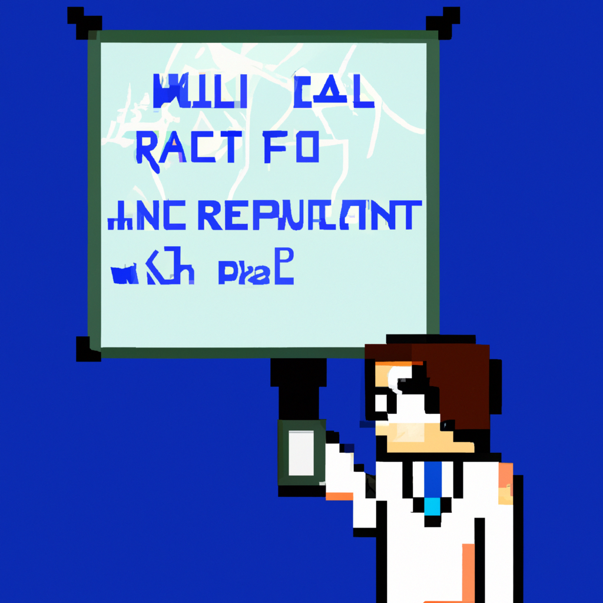

Why AI will never replace the radiologist
The fear of automation taking away jobs has been around since the industrial revolution. With the development of machine learning, it has been suggested that radiologists could soon be replaced by AI. While this is an interesting thought, it is unlikely to ever happen for several reasons.
First, AI is simply not capable of replacing the knowledge and experience that a radiologist brings to the table. AI algorithms are still limited in the way they interpret data, and the interpretation of medical images requires a level of judgement and nuance that AI has yet to master.
Second, an AI algorithm is only as valuable as the data it is trained on. In order to accurately interpret medical images, AI algorithms need to be trained on large datasets. Not only is such a dataset expensive to acquire, but it must also be constantly updated as medical knowledge changes.
Finally, many radiologists are specifically trained to interpret complex medical images. AI algorithms can identify patterns, but they cannot think outside the box like a radiologist can. This means that AI algorithms are likely to miss certain conditions that a radiologist would easily be able to identify.
In conclusion, while AI is a valuable tool in the medical field, it is unlikely to ever replace radiologists. AI algorithms are still far from being able to interpret medical images as accurately as a trained radiologist. For the foreseeable future, the role of the radiologist is secure.